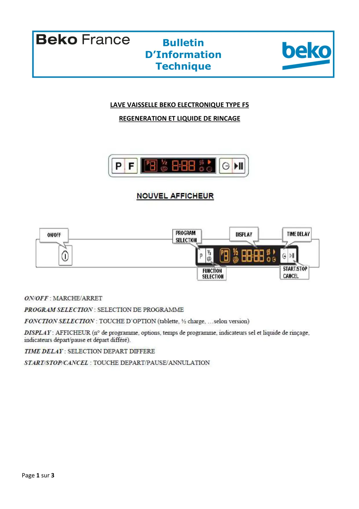
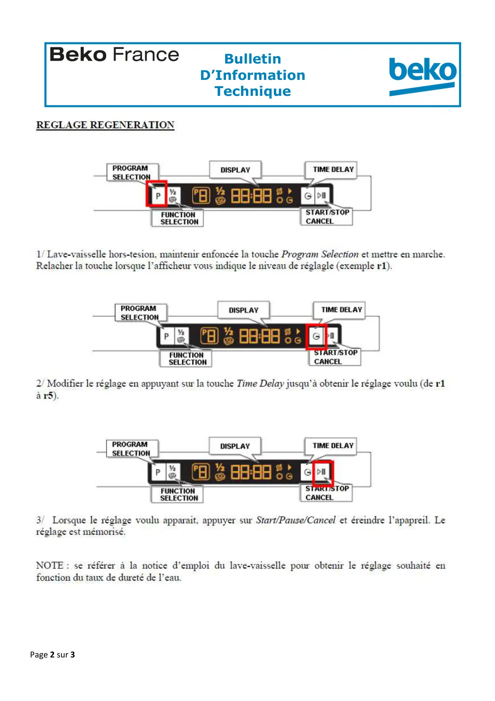
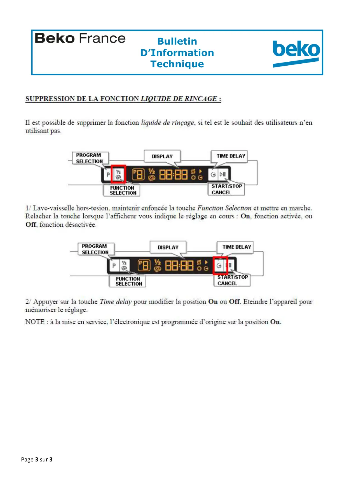

Régénération LVI F5

Page 1 sur 3BulletinD’InformationTechniqueZA de la Voûte73650 PETIT COURONNE01.58.34.46.46LAVE VAISSELLE BEKO ELECTRONIQUE TYPE F5REGENERATION ET LIQUIDE DE RINCAGE
1 / 3
Page 2 sur 3BulletinD’InformationTechniqueZA de la Voûte73650 PETIT COURONNE01.58.34.46.46
2 / 3
Page 3 sur 3BulletinD’InformationTechniqueZA de la Voûte73650 PETIT COURONNE01.58.34.46.46
3 / 3